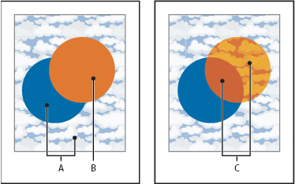

About blending modes
Blending modes let you vary the ways that the colors of objects blend with the colors of underlying objects. When you apply a blending mode to an object, the effect of the blending mode is seen on any objects that lie beneath the object’s layer or group.
It’s helpful to think in terms of the following color terminology when visualizing a blending mode’s effect:
-
The blend color is the original color of the selected object, group, or layer.
-
The base color is the underlying color in the artwork.
-
The resulting color is the color resulting from the blend.

Topmost object with Normal blending (left) compared to Hard Light blending mode (right)
- A.
- Base colors in underlying objects at 100% opacity
- B.
- Blend color in topmost object
- C.
- Resulting colors after applying the Hard Light blending mode to the topmost object
For a video on working with blending modes, see www.adobe.com/go/vid0055.
Illustrator provides the following blending modes:
- Normal
- Paints the selection with the blend color, without interaction with the base color. This is the default mode.
- Darken
- Selects the base or blend color—whichever is darker—as the resulting color. Areas lighter than the blend color are replaced. Areas darker than the blend color do not change.
- Multiply
- Multiplies the base color by the blend color. The resulting color is always a darker color. Multiplying any color with black produces black. Multiplying any color with white leaves the color unchanged. The effect is similar to drawing on the page with multiple magic markers.
- Color Burn
- Darkens the base color to reflect the blend color. Blending with white produces no change.
- Lighten
- Selects the base or blend color—whichever is lighter—as the resulting color. Areas darker than the blend color are replaced. Areas lighter than the blend color do not change.
- Screen
- Multiplies the inverse of the blend and base colors. The resulting color is always a lighter color. Screening with black leaves the color unchanged. Screening with white produces white. The effect is similar to projecting multiple slide images on top of each other.
- Color Dodge
- Brightens the base color to reflect the blend color. Blending with black produces no change.
- Overlay
- Multiplies or screens the colors, depending on the base color. Patterns or colors overlay the existing artwork, preserving the highlights and shadows of the base color while mixing in the blend color to reflect the lightness or darkness of the original color.
- Soft Light
-
Darkens
or lightens the colors, depending on the blend color. The effect
is similar to shining a diffused spotlight on the artwork.
If the blend color (light source) is lighter than 50% gray, the artwork is lightened, as if it were dodged. If the blend color is darker than 50% gray, the artwork is darkened, as if it were burned in. Painting with pure black or white produces a distinctly darker or lighter area but does not result in pure black or white.
- Hard Light
-
Multiplies
or screens the colors, depending on the blend color. The effect
is similar to shining a harsh spotlight on the artwork.
If the blend color (light source) is lighter than 50% gray, the artwork is lightened, as if it were screened. This is useful for adding highlights to artwork. If the blend color is darker than 50% gray, the artwork is darkened, as if it were multiplied. This is useful for adding shadows to artwork. Painting with pure black or white results in pure black or white.
- Difference
- Subtracts either the blend color from the base color or the base color from the blend color, depending on which has the greater brightness value. Blending with white inverts the base-color values. Blending with black produces no change.
- Exclusion
- Creates an effect similar to but lower in contrast than the Difference mode. Blending with white inverts the base-color components. Blending with black produces no change.
- Hue
- Creates a resulting color with the luminance and saturation of the base color and the hue of the blend color.
- Saturation
- Creates a resulting color with the luminance and hue of the base color and the saturation of the blend color. Painting with this mode in an area with no saturation (gray) causes no change.
- Color
- Creates a resulting color with the luminance of the base color and the hue and saturation of the blend color. This preserves the gray levels in the artwork and is useful for coloring monochrome artwork and for tinting color artwork.
- Luminosity
-
Creates
a resulting color with the hue and saturation of the base color
and the luminance of the blend color. This mode creates an inverse
effect from that of the Color mode.
Note: The Difference, Exclusion, Hue, Saturation, Color, and Luminosity modes do not blend spot colors—and with most blending modes, a black designated as 100% K knocks out the color on the underlying layer. Instead of 100% black, specify a rich black using CMYK values.